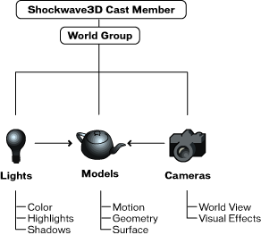

What's New in Director 8.5 > The 3D Cast Member > The 3D cast member overview
What's New in Director 8.5 > The 3D Cast Member > The 3D cast member overview |
The 3D cast member overview
A Macromedia Director 3D cast member contains a complex internal structure that includes model resources, models, lights, and cameras. Each of these objects has its own array of properties. This chapter gives an overview of the cast member structure. The chapters that follow explain the types of objects in more detail.
Each Director 3D cast member contains an entire 3D world. Each world is a collection of one or more models and other objects. These objects include the following:
Model resources are elements of 3D geometry used to render models. The same model resource can be used by several models in the 3D world. |
|
Models are visible objects in the 3D cast member that make use of a model resource geometry. For more information on models, see Working with models and model resources overview. |
|
Shaders are methods of displaying the surface of a model. Shaders control how the surface of the model reflects light, and therefore whether the surface looks like metal, plaster, or other materials. |
|
Textures are simple 2D images that are drawn onto the surface of a 3D model. A model's surface appearance is the result of the combination of its shader and any textures that have been applied to it. |
|
Motions are predefined animation sequences that involve the movement of models or model components. Individual motions can be set to play by themselves or in combination with other motions. A running motion could be combined with a jumping motion to simulate a person jumping over a puddle, for example. |
|
Lights are sources of illumination within the 3D world. Lights can be directional like a spotlight, or they can be diffuse. |
|
Cameras are views into the 3D cast member. Each sprite that uses a given cast member can display the view from a different camera if you choose. For more information on sprites, see 3D basics overview. |
|
Groups are clusters of models, lights, and/or cameras that have been associated with one another. This makes moving the associated items much easier: rather than moving each item separately, you can write Lingo that moves the group with a single command. |
Each model, light, camera, and group within a 3D cast member is referred to as a node. Nodes can be arranged in parent-child hierarchies. When a parent moves, its children move with it. A car wheel can be a child of a car body, for example. These parent-child relationships are established in your third-party 3D modeling software or with Lingo.
The following illustration shows the relationships between cameras, lights, and models within the 3D cast member, as well as the relation of model to model resource and of model to shader, texture, and motion.

Although the elements of a 3D scene can be modified and manipulated with 3D behaviors, complex work requires Lingo scripting. For more information on behaviors, see Using 3D behaviors overview. The following section describes in more detail the commands and properties used to manipulate each of the types of nodes in a 3D cast member. For more information about an individual command or property, see 3D Lingo Dictionary.